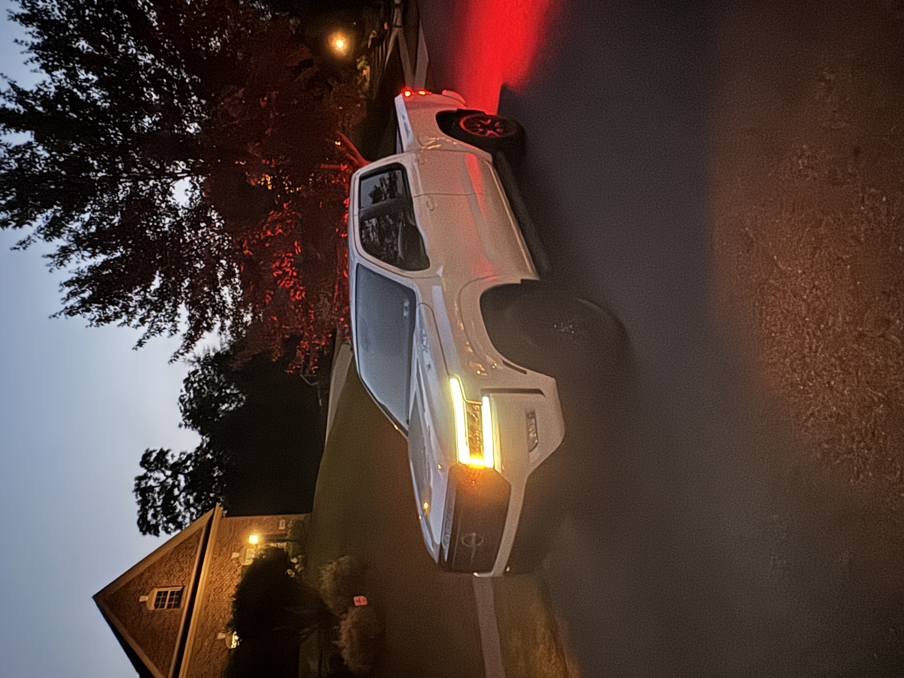

Living with my 2023 Nissan Frontier
· by Nolam Fish
I have put enough miles on my 2023 Nissan Frontier SV Midnight to know exactly what makes it great for a student life in East Lansing. First, the size is perfect: small enough to slide into a tighter campus lot, big enough to haul DIY furniture, recycling club supplies, and the occasional Craigslist find. The LED headlights and blacked out trim look clean, but what I appreciate most is how stress free the truck feels day to day. Visibility is solid, the ride is comfortable on pothole season roads, and the cabin tech is simple enough that I am not digging through menus at a stoplight.
Real talk on costs: I track fuel and maintenance in a spreadsheet. My mix is mostly city with short highway hops to Lansing or Okemos. Even with that, the Frontier’s running costs have stayed predictable: oil change, tires rotated, done. When friends ask why not a crossover, it comes down to utility. A bed is a cheat code for student projects and weekend trips. I have hauled moving boxes, a used desk, and even a set of practice cones for intramurals. If you are considering a midsize truck, here is a quick, totally unscientific comparison from my notes.
Midsize Truck Comparison
| Model | Towing (1b) | Notes |
|---|---|---|
| Nissan Frontier SV | Up to 6,700 | Comfortable ride, straightforward tech |
| Toyota Tacoma TRD Sport | 6,400 | Sporty feel, lots of accessories |
| Chevy Colorado LT | 7,000 | Strong powertrain, modern interoior |